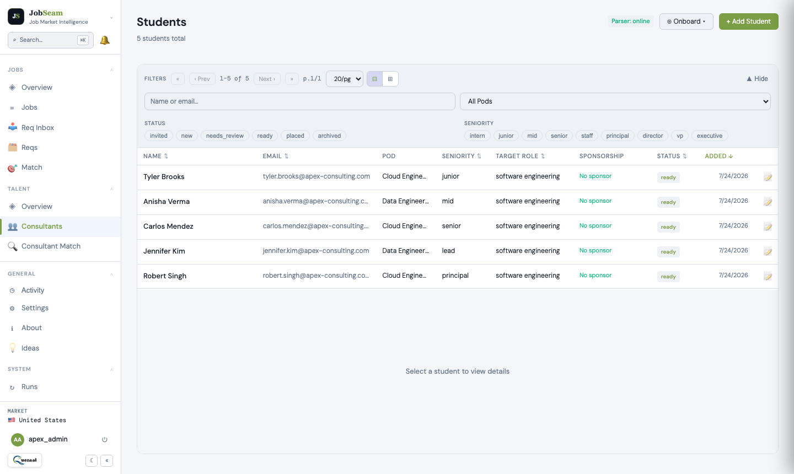
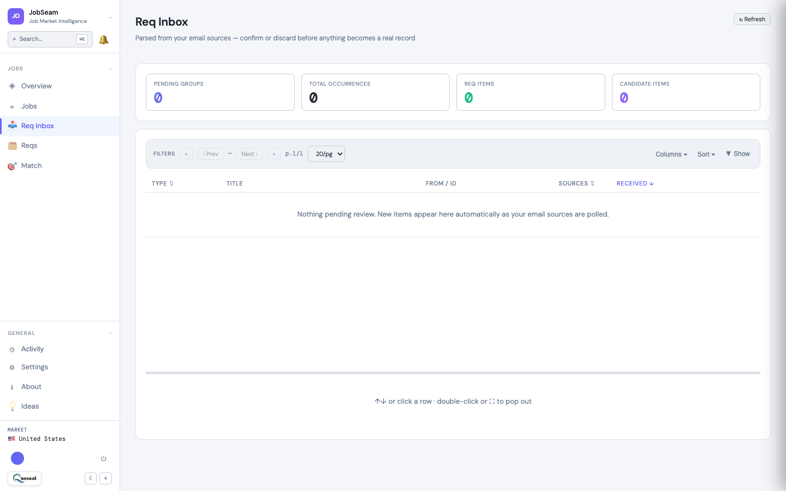
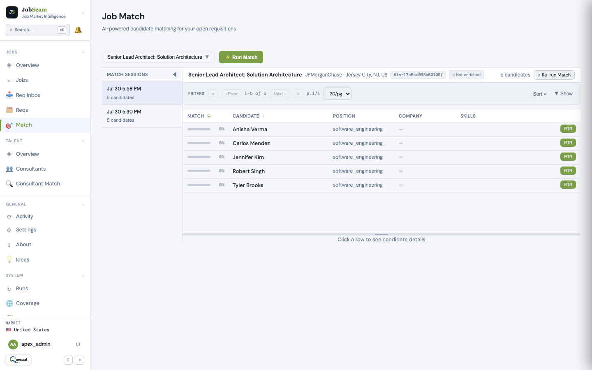
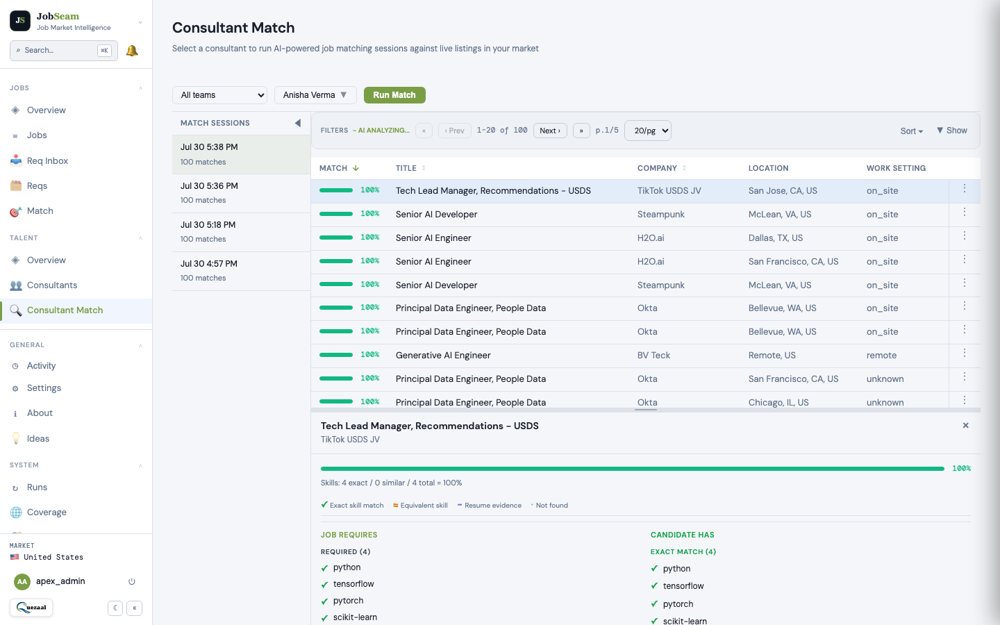

Explore demand.
Review fit. Take action.
Start with job market dashboards, narrow opportunities by role, skills, and location, then compare talent profiles and track your next step. The staffing workflow below shows how teams turn a requirement into a reviewed match and RTR.
See the fit.
Choose your next step.
Ranked results help your team decide which consultants to review first. Open a match to compare exact skills, related skills, and gaps before moving to RTR.
A match score indicates skill alignment with a requirement. It is not a placement probability or a guarantee of suitability.
Explore matching and review features →Java Tech Lead
4 example consultants
-
Arjun Mehta 94%RTR sent
-
Selin Yildiz 87%Strong match
-
Rafael Costa 61%Partial match
-
Priya Sharma 54%Partial match
Illustrative names, scores, and statuses. This is a sample of the matching workflow, not live customer data.
Bring your bench and requirements together.
Bring your bench into focus
Upload consultant resumes and review the parsed skills, experience, and profile details. Your team can correct the profile before using it for matching.

Connect your requirements
Connect a requirement mailbox so incoming vendor emails become structured requirements. Explore opportunities from supported job sources and markets alongside them.

Find matches in either direction
Start with a requirement to find suitable consultants, or start with a consultant to find relevant requirements. Both workflows help your team narrow the search.

Review the evidence
Open ranked matches, compare exact and related skills, and review gaps. A score supports your judgment; your rep decides whether the opportunity is a fit.

Move to RTR and follow up
Use the Right-to-Represent workflow and activity history to keep track of actions. Keep your team informed as a requirement moves toward a submission.

See the steps come together.
Watch the product walkthrough, then bring one anonymized consultant resume to a personalized session with our team.
Inside JobSeam
Watch the walkthrough on YouTube ↗
Have questions about matching, setup, or RTR? Read the FAQs →
Explore JobSeam for your workflow.
Explore market demand, talent matching, and the workflow that fits your goals. Bring an anonymized resume if you like, or we’ll use sample data.
Book a 20-minute demo ↗